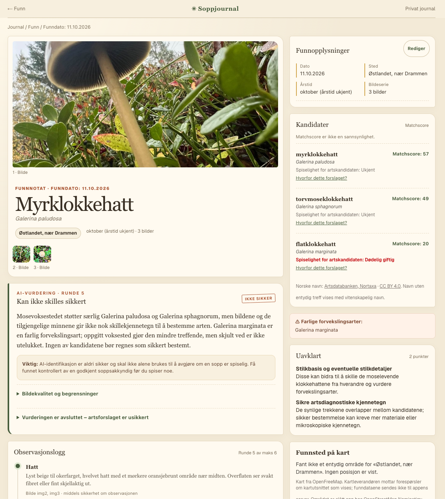
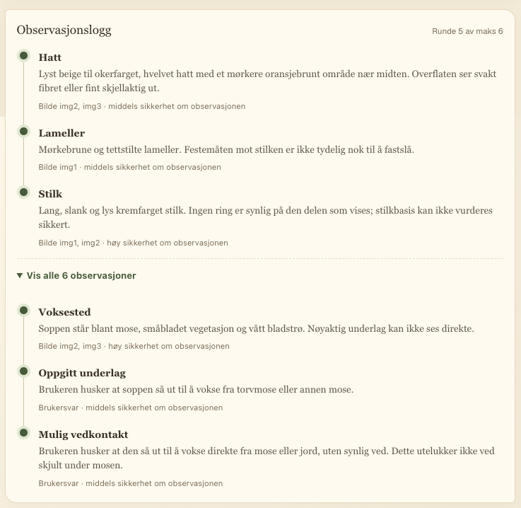
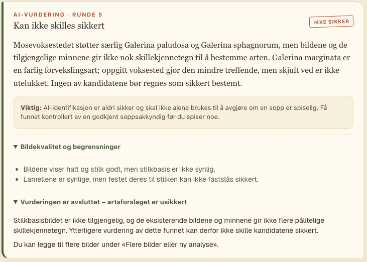

Soppjournal · personlig prosjekt
Spore
En soppjournal som hjelper meg å undersøke, ikke bare gjette.
Bilder og observasjoner blir til en undersøkelse som kan fortsette over flere runder. Jeg vil både ta vare på funnene mine og forstå hvilke kjennetegn som betyr noe.
Hvorfor Spore?
Et bilde kan gi et første forslag til hvilken sopp man har funnet. Men hva mangler for å skille den fra en annen art? Det er spørsmålet Spore er bygget rundt. Appen skal gjøre det lettere å dokumentere et funn, undersøke det videre og komme tilbake til vurderingen senere.
Spore er en personlig soppjournal og identifikasjonshjelp under utvikling. Den samler bilder, funndato, sted, svar og tidligere vurderinger. Et eget forslag eller en kontrollert artsbestemmelse kan registreres separat fra KI-ens forslag.
Usikkerhet er en del av resultatet. KI-identifikasjon skal ikke alene brukes til å avgjøre om en sopp er spiselig. Appens matchscore er en vurderingsskala, ikke en sannsynlighet eller en garanti.
Slik fungerer det
Ta bilder i felt, eller legg inn en eldre bildeserie. Kontroller dato og sted.
KI beskriver kjennetegn, foreslår kandidater og ber om et nytt bilde eller et svar.
Behold vurderingshistorikken, legg til mer senere og eksporter journalen som sikkerhetskopi.
Hvis jeg ikke vet svaret eller ikke lenger har tilgang til soppen, kan jeg si det. Appen skal forsøke et annet tilgjengelig steg eller avslutte med tydelig usikkerhet. Manglende informasjon skal ikke tolkes som et nytt funn.
Spore i bruk
Skjermbilder fra soppjournalen under utvikling. Her er et eksempel der undersøkelsen ender med at arten ikke kan bestemmes sikkert. Klikk på et bilde for å åpne det i full størrelse.



For teknologen
Arkitektur og arbeidsdelingSpore er bygget med Next.js og TypeScript. Nettleseren eier undersøkelsens tilstand. En tilstandsløs API-rute sender den aktuelle konteksten til KI-modellen og returnerer en strukturert vurdering. Journalen lagres i IndexedDB, uten en sentral journal-database.
| Del | Ansvar |
|---|---|
| Klient og IndexedDB | Bilder, funnopplysninger, innsendte svar og komplette vurderinger. Import og eksport av journalen. |
| Fakta og bildebehandling | EXIF, bilde-ID-er, størrelsesgrenser og brukerens valgte dato og sted. Bildemetadata holdes atskilt fra bekreftede funnopplysninger. |
| KI-adapter | Ett modellkall per analyserunde. OpenAI-integrasjonen ligger bak en egen inngang, og delvise resultater brukes til fremdriftsvisning. |
| Zod og koderegler | Strukturert svar med observasjoner, kandidater, manglende belegg og neste handling. Faste regler kontrollerer resultatet før bruk. |
En eksplisitt kontrakt for neste steg
Modellen returnerer en avgrenset handling: be om bilde, stille et flervalgsspørsmål, et ja/nei-spørsmål, et fritekstspørsmål eller avslutte. Klienten kan derfor vise riktig kontroll uten å måtte tolke fri tekst som programlogikk.
Hver kandidat har støttende, motstridende og manglende belegg. Observasjonene peker på bilde-ID-er eller brukersvar. Skjemaet kontrollerer formen på svaret; det beviser ikke at den biologiske vurderingen er riktig.
Usikkerhet håndheves også i kode
enforceRules() setter et tak på matchscore: 80 når modellen bare gir én kandidat, ellers 95. Et rent «vet ikke»-svar uten nye bilder skal ikke øke scoren. Gjenkjennes et nytt forslag som en allerede utilgjengelig undersøkelse, kan runden avsluttes med CANNOT_DISTINGUISH.
Lagring som tåler avbrudd
Innsendt materiale og siste komplette vurdering kan beholdes selv om analysen avbrytes. Delvis strømmet tekst er fremdrift, ikke et ferdig resultat. Import validerer hele eksportfilen før en samlet lagringsoperasjon; eldre data leses gjennom migrering. Nettleserlagring trenger fortsatt sikkerhetskopi.
Hvordan prosjektet har utviklet seg
Fra bildeanalyse til oppfølging
Prosjektet begynte med å undersøke modellens forslag på soppbilder. Arbeidet ble utvidet til en løkke med nye observasjoner, dokumenterte stoppgrunner og sammenligning av vurderinger.
Fra testbilder til feltbruk
Videre utvikling har prioritert bildeserier, eldre funn, redigering av dato og sted, gjenopptakelse etter avbrudd og eksport/import. Målet har blitt en brukbar journal gjennom en hel undersøkelse.
Et tydeligere feltbokpreg
Nyere commits viser arbeid med kart, skillet mellom manuelt sted og enhetens GPS, og et mer samlet feltbokdesign for journalen og funnsiden. Historikken inneholder også en tilbakeføring av et kartforsøk: utforskning betyr at løsninger kan prøves og tas ut igjen.
Hva fungerer nå — og hva er grensene?
Journal, oppfølging, bildeserier, vurderingshistorikk og sikkerhetskopiering er implementert. Testene dekker blant annet lagring, avbrudd, import og brukerflyter med simulerte modellsvar. Det dokumenterer programoppførsel, ikke generell treffsikkerhet på sopp.
Analyse krever nett og sender bildene og relevant funnkontekst til en ekstern KI-tjeneste. Lokal lagring betyr derfor ikke at analysen skjer på enheten. Det finnes et begrenset kildeutvalg for sesong og utbredelse; det er ikke en komplett økologisk kunnskapsbase.
Appen er foreløpig et personlig verktøy, ikke en åpen artsbestemmelsestjeneste.
Kildegrunnlag: prosjektets kode og utviklingsnotater, gjennomgått 26. oktober 2026. Blant annet schema.ts, ai/identify.ts, ai/rules.ts og storage.ts; historikk til 9b345926. Kilderepoet er privat.